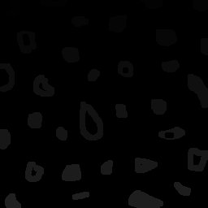

Trabalhos referentes a 1ª unidade de PDI
- Exercício 1
Essa prática visa solucitar ao usuário cordenadas de dois pontos, para que essa região seja transformada em imagem negativa. Temos logo a seguir o código que foi adicionado no código original:
Imagem 1
Como podemos ver o que temos na imagem 1 é apenas a entrada do usuário, para ele especificar a região que ele quer que seja "modificada".
Imagem 2
Já na imagem 2, temos as operações feitas no nossa imagem, onde na variável imagem recortada, temos apenas o recorte da imagem que teve a região especificada pelo usuário, como mostrado na imagem 3. Já na variável imagemRecortadaNegativa, temos a imagem que foi recortada invertendo os seus bits(-255), que também podemos ver na imagem 3. E por fim temos a "união" da imagem original, com a imagem recortada e negativa como também podemos ver na imagem 3.
Imagem 3
- Exercício 2
Essa prática visa solucitar visa a troca de regiões de uma imagem. Temos logo a seguir o código que foi adicionado no código original:
Imagem 4
Como podemos ver o que temos na imagem 4 é a entrada normal de uma imagem que foi especificada pelo código(bolhas.png) e após isso temos que identificamos o tamanho em linhas e colunas da imagem de entrada que foi armazenado em duas variáveis chamadas "rows"e "cols", que será útil para saber o local exato do meio da imagem em relação as linhas e colunas.
Depois que se tem as linhas e colunas da imagem é só recortar a imagem em 4 regiões diferentes da imagem, com o construtor Rect(), passando os parâmetros de x, y, tamanho e altura, para que se tenha o recorte da imagem.
Após o recorete em 4 imagens diferentes, temos que copiar essa imagem para a imagem original, por exemplo e com isso temos a saída da nossa imagem invertida como na imagem 6.

Imagem 5
Imagem 6
- Exercício 1
Essa prática tem como objetivo a solução do problema para uma quantidade de objetos maior que 255, que é a quantidade máxima de objetos que pode ser rotulado em região de cinza, pois existe 255 tons de cinza. Temos logo a seguir o código que foi adicionado no código original:
Imagem 7
Na imagem 7, temos a solução do problema, pois a solução que foi encontrada está no if interno(if(nobjects == 255)), onde caso a contagem de objetos seja igual a 255, será seráda a variável nobjects, voltando a rotular de 0 e armazenando em uma outra variável.
Após o recorete em 4 imagens diferentes, temos que copiar essa imagem para a imagem original, por exemplo e com isso temos a saída da nossa imagem invertida como na imagem 6.
Imagem 8
Imagem 9
- Exercício 1
Essa prática tem como objetivo fazer equalização do histograma da imagem, que é capturada pela camera. Temos logo a seguir o código que foi adicionado no código original:
Imagem 10
Como podemos ver o que temos na imagem 10 é apenas a equalização do histograma, onde foi utilizado o contrutor do OpenCV, que foi passado como parâmetro os panos de cada cor de histograma que seria equalizado e o plane que receberia o histograma resultante da equalização.
Imagem 11
Imagem 12
Como podemos ver na imagem 11, nós temos os histogramas normais da imagem e na imagem 12 nós temos os histogramas já equalizados, como pede a questão, só lembrando foi feita a equalização apenas dos histogramas, como foi pedido no exercício!
- Exercício 2
Essa prática tem como objetivo fazer a detecção de movimento da imagem, que é capturada pela camera. Temos logo a seguir o código que foi adicionado no código original:
Imagem 13
Essa prática tem como objetivo fazer a detecção de movimento da imagem, que é capturada pela camera. Temos logo a seguir o código que foi adicionado no código original:

Imagem 14
Como podemos ver o que temos na imagem 10 é apenas a equalização do histograma, onde foi utilizado o contrutor do OpenCV, que foi passado como parâmetro os panos de cada cor de histograma que seria equalizado e o plane que receberia o histograma resultante da equalização.
Imagem 11
Imagem 12
Como podemos ver na imagem 11, nós temos os histogramas normais da imagem e na imagem 12 nós temos os histogramas já equalizados, como pede a questão, só lembrando foi feita a equalização apenas dos histogramas, como foi pedido no exercício!